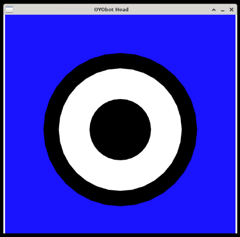
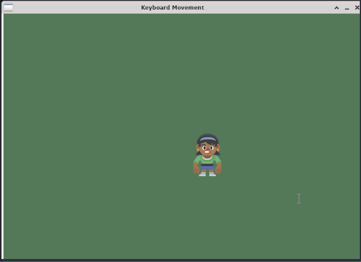

Arcade
Arcade is a simple game engine library for Python for building 2D games. You can easily build simple games in a small amount of time to test out your ideas with an easy to learn interface.
Examples
Drawing OYObot's Head
Before we add any player input, let's simply try drawing something to the screen:
import arcade
# Open the window. Set the window title and dimensions
arcade.open_window(600, 600, 'OYObot Head')
# Set the background color
arcade.set_background_color(arcade.color.BLUE)
# the start_render function tells arcade to clear the screen and begin drawing
# a new frame
arcade.start_render()
# OYObot's head is 3 concentric circles of decreasing radius
head_x = 300
head_y = 300
arcade.draw_circle_filled(head_x, head_y, 200, arcade.color.BLACK)
arcade.draw_circle_filled(head_x, head_y, 160, arcade.color.WHITE)
arcade.draw_circle_filled(head_x, head_y, 80, arcade.color.BLACK)
# the finish_render function tells arcade that we're done drawing and to show
# the result to the player
arcade.finish_render()
arcade.run()
Your output will look like this:

Getting Player Input
Getting player input requires we read it from the built in on_key_press function. We can do this by creating our own class that extends from arcade's arcade.Window class:
import arcade
SCREEN_WIDTH = 800
SCREEN_HEIGHT = 600
SCREEN_TITLE = "Better Move Sprite with Keyboard Example"
ARROW_KEYS = (arcade.key.UP, arcade.key.DOWN, arcade.key.LEFT, arcade.key.RIGHT)
MOVEMENT_SPEED = 5
class Player(arcade.Sprite):
def update(self):
# Move the player
self.center_x += self.change_x
self.center_y += self.change_y
class MyGame(arcade.Window):
# OVERWRITE BUILTIN FUNCTIONS
def __init__(self, width, height, title):
super().__init__(width, height, title)
# Create a variable to hold the player list
self.player_list = None
# Set up the player info
self.player_sprite = None
# Track the current state of what key is pressed
self.left_pressed = False
self.right_pressed = False
self.up_pressed = False
self.down_pressed = False
# Set the background color
arcade.set_background_color(arcade.color.AMAZON)
def setup(self):
# Sprite lists
self.player_list = arcade.SpriteList()
# Set up the player
# This sprite image is built into arcade
self.player_sprite = Player(":resources:images/animated_characters/female_person/femalePerson_idle.png")
self.player_sprite.center_x = 400
self.player_sprite.center_y = 400
self.player_list.append(self.player_sprite)
def on_draw(self):
# Clear the screen
self.clear()
# Draw all the sprites.
self.player_list.draw()
def on_update(self, delta_time):
# Call update to move the sprite
self.player_list.update()
def on_key_press(self, key, modifiers):
if key in ARROW_KEYS:
if key == arcade.key.UP:
self.up_pressed = True
elif key == arcade.key.DOWN:
self.down_pressed = True
elif key == arcade.key.LEFT:
self.left_pressed = True
elif key == arcade.key.RIGHT:
self.right_pressed = True
self.update_player_speed()
def on_key_release(self, key, modifiers):
if key in ARROW_KEYS:
if key == arcade.key.UP:
self.up_pressed = False
elif key == arcade.key.DOWN:
self.down_pressed = False
elif key == arcade.key.LEFT:
self.left_pressed = False
elif key == arcade.key.RIGHT:
self.right_pressed = False
self.update_player_speed()
# END OVERWRITE BUILTIN FUNCTIONS
# Custom function
def update_player_speed(self):
# Calculate speed based on the keys pressed
self.player_sprite.change_x = 0
self.player_sprite.change_y = 0
# Since we add speeds together whenever each key is pressed, holding
# opposite directions will add up to 0 and hold the player still
if self.up_pressed:
self.player_sprite.change_y += MOVEMENT_SPEED
if self.down_pressed:
self.player_sprite.change_y -= MOVEMENT_SPEED
if self.left_pressed:
self.player_sprite.change_x -= MOVEMENT_SPEED
if self.right_pressed:
self.player_sprite.change_x += MOVEMENT_SPEED
window = MyGame(SCREEN_WIDTH, SCREEN_HEIGHT, 'Keyboard Movement')
window.setup()
arcade.run()
You will get a window on the right like this, and you can use your arrow keys to move the sprite around:

Reference
- Arcade at api.arcade.academy
- Some Example Games that show what the Arcade library can do